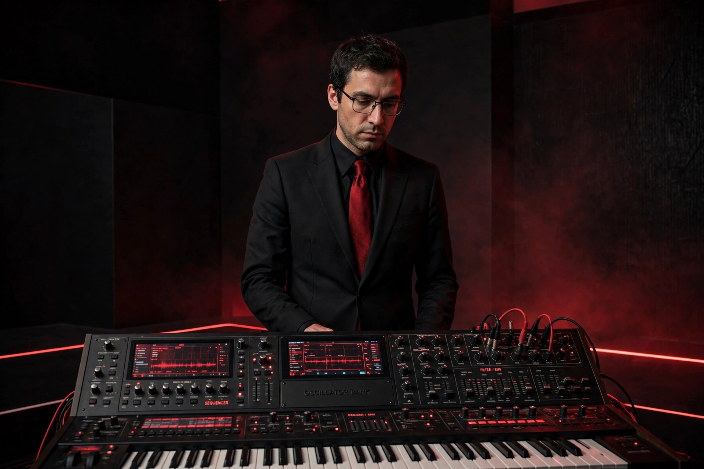

| Ralf Hütter | |
|---|---|
 | |
| Born | 20 August 1946, Krefeld, Germany |
| Occupation | Musician, singer |
| Instruments | Keyboards, synthesizers, vocals, vocoder |
| Years active | 1965–present |
| Associated acts | Kraftwerk, Organisation |
Ralf Hütter (born 20 August 1946) is a German musician best known as the lead singer and keyboardist of the electronic music pioneers Kraftwerk, which he founded with Florian Schneider in Düsseldorf in 1970. Hütter is the band's only remaining founding member and its principal conceptual leader.
Hütter studied classical music and architecture and met Schneider at the Robert Schumann Hochschule; together they played in the group Organisation, releasing the album Tone Float (1970), before forming Kraftwerk and setting up the Kling Klang studio. From Autobahn (1974) through Trans-Europe Express (1977), The Man-Machine (1978) and Computer World (1981), Hütter shaped Kraftwerk's minimalist melodies, robotic imagery and themes of transport, radioactivity and computing.
An avid cyclist, Hütter was seriously injured in a cycling accident in 1982 during the long gestation of Electric Café (1986); cycling also inspired the single "Tour de France" (1983) and the 2003 album Tour de France Soundtracks. After Schneider departed in 2008, Hütter continued Kraftwerk as a touring multimedia project with elaborate 3-D stage shows. He is famously private and rarely gives interviews, and he has pursued litigation over sampling of the Kraftwerk track "Metall auf Metall".
Florian Schneider · Kraftwerk · Krautrock · Techno
From Wikipedia, the free encyclopedia (recreated from memory).